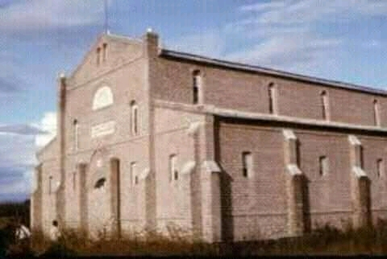

lUMPA CHURCH MUSIC ZAMBIA
created by Macdonald Mbulo, the owner, CEO of the website and member of Jerusalem church Zambia. click the navigation bar below
HISTORY OF LUMPA CHURCH.
The Lumpa Church,is an independent Christian church, that was established in 1953 by 'Alice Lenshina Mulenga' in the village of Kasama, Northern Rhodesia (Zambia).

Lumpa Church itself is said to split into various churches namely;Jerusalem Church, Uluse Kamutola Church, New Jerusalem Church and Siloam church.Therefore this website is for all lUMPA churches.

© 2023 All Rights Reserved.